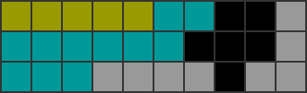

<!DOCTYPE html>
<!--[if IE 8]><html class="no-js lt-ie9" lang="en" > <![endif]-->
<!--[if gt IE 8]><!--> <html class="no-js" lang="en" > <!--<![endif]-->
<head>
  <meta charset="utf-8">
  
  <meta name="viewport" content="width=device-width, initial-scale=1.0">
  
  <title>コマンド: setup (α版) &mdash; solution-finder 0.502 ドキュメント</title>
  

  
  
  
  
    <link rel="canonical" href="https://github.com/knewjade/solution-finder/latest/contents/setup/main.html"/>
  

  

  
  
    

  

  
  
    <link rel="stylesheet" href="../../_static/css/theme.css" type="text/css" />
  

  
    <link rel="stylesheet" href="../../_static/banner.css" type="text/css" />
  

  
        <link rel="index" title="索引"
              href="../../genindex.html"/>
        <link rel="search" title="検索" href="../../search.html"/>
    <link rel="top" title="solution-finder 0.502 ドキュメント" href="../../index.html"/>
        <link rel="next" title="コマンド: util" href="../util/main.html"/>
        <link rel="prev" title="key: none" href="../path/csv.html"/> 

  
  <script src="../../_static/js/modernizr.min.js"></script>

</head>

<body class="wy-body-for-nav" role="document">

   
  <div class="wy-grid-for-nav">

    
    <nav data-toggle="wy-nav-shift" class="wy-nav-side">
      <div class="wy-side-scroll">
        <div class="wy-side-nav-search">
          

          
            <a href="../../index.html" class="icon icon-home"> solution-finder
          

          
          </a>

          

          
<div role="search">
  <form id="rtd-search-form" class="wy-form" action="../../search.html" method="get">
    <input type="text" name="q" placeholder="Search docs" />
    <input type="hidden" name="check_keywords" value="yes" />
    <input type="hidden" name="area" value="default" />
  </form>
</div>

          
        </div>

        <div class="wy-menu wy-menu-vertical" data-spy="affix" role="navigation" aria-label="main navigation">
          
            
            
              
            
            
              <p class="caption"><span class="caption-text">目次</span></p>
<ul class="current">
<li class="toctree-l1"><a class="reference internal" href="../quick_start.html">クイックスタート</a><ul>
<li class="toctree-l2"><a class="reference internal" href="../quick_start.html#id2">初めての方</a><ul>
<li class="toctree-l3"><a class="reference internal" href="../quick_start.html#windows">Windows</a></li>
<li class="toctree-l3"><a class="reference internal" href="../quick_start.html#mac">Mac</a></li>
</ul>
</li>
<li class="toctree-l2"><a class="reference internal" href="../quick_start.html#id3">しっかりと利用したい方</a><ul>
<li class="toctree-l3"><a class="reference internal" href="../quick_start.html#windows-bat">Windows (batをベースにオプションを変更する)</a></li>
<li class="toctree-l3"><a class="reference internal" href="../quick_start.html#id4">Windows (コマンドラインから操作する)</a></li>
<li class="toctree-l3"><a class="reference internal" href="../quick_start.html#id5">Mac</a></li>
</ul>
</li>
</ul>
</li>
<li class="toctree-l1"><a class="reference internal" href="../field.html">フィールドの指定</a><ul>
<li class="toctree-l2"><a class="reference internal" href="../field.html#id2">概要</a></li>
<li class="toctree-l2"><a class="reference internal" href="../field.html#id3">書き方: テト譜の場合</a><ul>
<li class="toctree-l3"><a class="reference internal" href="../field.html#id4">テト譜の入力方法</a></li>
</ul>
</li>
<li class="toctree-l2"><a class="reference internal" href="../field.html#id5">書き方: フィールドファイルの場合</a></li>
</ul>
</li>
<li class="toctree-l1"><a class="reference internal" href="../patterns.html">ミノの組み合わせ</a><ul>
<li class="toctree-l2"><a class="reference internal" href="../patterns.html#id2">概要</a></li>
<li class="toctree-l2"><a class="reference internal" href="../patterns.html#id3">基本ルール</a></li>
<li class="toctree-l2"><a class="reference internal" href="../patterns.html#id4">要素ルール</a></li>
<li class="toctree-l2"><a class="reference internal" href="../patterns.html#id5">書き方: パターンファイルの場合</a></li>
<li class="toctree-l2"><a class="reference internal" href="../patterns.html#id6">書き方: テト譜の場合</a></li>
<li class="toctree-l2"><a class="reference internal" href="../patterns.html#id7">書き方: コマンドラインの場合</a></li>
<li class="toctree-l2"><a class="reference internal" href="../patterns.html#id8">サンプル: コマンド集</a></li>
</ul>
</li>
<li class="toctree-l1"><a class="reference internal" href="../command.html">コマンドについて</a><ul>
<li class="toctree-l2"><a class="reference internal" href="../command.html#id2">概要</a><ul>
<li class="toctree-l3"><a class="reference internal" href="../command.html#id3">サブコマンドについて</a></li>
</ul>
</li>
<li class="toctree-l2"><a class="reference internal" href="../command.html#id4">テト譜からオプションを指定する</a></li>
<li class="toctree-l2"><a class="reference internal" href="../command.html#id5">オプションの優先順位</a></li>
</ul>
</li>
<li class="toctree-l1"><a class="reference internal" href="../percent/main.html">コマンド: percent</a><ul>
<li class="toctree-l2"><a class="reference internal" href="../percent/main.html#id1">概要</a></li>
<li class="toctree-l2"><a class="reference internal" href="../percent/main.html#id2">基本コマンド</a></li>
<li class="toctree-l2"><a class="reference internal" href="../percent/main.html#id3">注意事項</a></li>
<li class="toctree-l2"><a class="reference internal" href="../percent/main.html#id4">オプション一覧</a><ul>
<li class="toctree-l3"><a class="reference internal" href="../percent/main.html#h-hold-default-use"><code class="docutils literal"><span class="pre">-H</span></code>, <code class="docutils literal"><span class="pre">--hold</span></code> [default: use]</a></li>
<li class="toctree-l3"><a class="reference internal" href="../percent/main.html#t-tetfu-default"><code class="docutils literal"><span class="pre">-t</span></code>, <code class="docutils literal"><span class="pre">--tetfu</span></code> [default: なし]</a></li>
<li class="toctree-l3"><a class="reference internal" href="../percent/main.html#p-page-default-1"><code class="docutils literal"><span class="pre">-P</span></code>, <code class="docutils literal"><span class="pre">--page</span></code> [default: 1]</a></li>
<li class="toctree-l3"><a class="reference internal" href="../percent/main.html#p-patterns-default"><code class="docutils literal"><span class="pre">-p</span></code>, <code class="docutils literal"><span class="pre">--patterns</span></code> [default: なし]</a></li>
<li class="toctree-l3"><a class="reference internal" href="../percent/main.html#c-clear-line-default-4"><code class="docutils literal"><span class="pre">-c</span></code>, <code class="docutils literal"><span class="pre">--clear-line</span></code> [default: 4]</a></li>
<li class="toctree-l3"><a class="reference internal" href="../percent/main.html#d-drop-default-softdrop"><code class="docutils literal"><span class="pre">-d</span></code>, <code class="docutils literal"><span class="pre">--drop</span></code> [default: softdrop]</a></li>
<li class="toctree-l3"><a class="reference internal" href="../percent/main.html#td-tree-depth-default-3"><code class="docutils literal"><span class="pre">-td</span></code>, <code class="docutils literal"><span class="pre">--tree-depth</span></code> [default: 3]</a></li>
<li class="toctree-l3"><a class="reference internal" href="../percent/main.html#fc-failed-count-default-100"><code class="docutils literal"><span class="pre">-fc</span></code>, <code class="docutils literal"><span class="pre">--failed-count</span></code> [default: 100]</a></li>
<li class="toctree-l3"><a class="reference internal" href="../percent/main.html#lp-log-path-default-output-last-output-txt"><code class="docutils literal"><span class="pre">-lp</span></code>, <code class="docutils literal"><span class="pre">--log-path</span></code> [default: output/last_output.txt]</a></li>
<li class="toctree-l3"><a class="reference internal" href="../percent/main.html#fp-field-path-default-input-field-txt"><code class="docutils literal"><span class="pre">-fp</span></code>, <code class="docutils literal"><span class="pre">--field-path</span></code> [default: input/field.txt]</a></li>
<li class="toctree-l3"><a class="reference internal" href="../percent/main.html#pp-patterns-path-default-input-patterns-txt"><code class="docutils literal"><span class="pre">-pp</span></code>, <code class="docutils literal"><span class="pre">--patterns-path</span></code> [default: input/patterns.txt]</a></li>
</ul>
</li>
<li class="toctree-l2"><a class="reference internal" href="../percent/main.html#id5">出力画面のサンプル</a></li>
</ul>
</li>
<li class="toctree-l1"><a class="reference internal" href="../path/main.html">コマンド: path</a><ul>
<li class="toctree-l2"><a class="reference internal" href="../path/main.html#id1">概要</a></li>
<li class="toctree-l2"><a class="reference internal" href="../path/main.html#id2">基本コマンド</a></li>
<li class="toctree-l2"><a class="reference internal" href="../path/main.html#id3">出力フォーマット</a></li>
<li class="toctree-l2"><a class="reference internal" href="../path/main.html#csv">CSV形式</a><ul>
<li class="toctree-l3"><a class="reference internal" href="../path/csv.html">key: none</a></li>
<li class="toctree-l3"><a class="reference internal" href="../path/csv.html#key-solution">key: solution</a></li>
<li class="toctree-l3"><a class="reference internal" href="../path/csv.html#key-pattern">key: pattern</a></li>
<li class="toctree-l3"><a class="reference internal" href="../path/csv.html#key-use">key: use</a></li>
</ul>
</li>
<li class="toctree-l2"><a class="reference internal" href="../path/main.html#id4">オプション一覧</a><ul>
<li class="toctree-l3"><a class="reference internal" href="../path/main.html#h-hold-default-use"><code class="docutils literal"><span class="pre">-H</span></code>, <code class="docutils literal"><span class="pre">--hold</span></code> [default: use]</a></li>
<li class="toctree-l3"><a class="reference internal" href="../path/main.html#t-tetfu-default"><code class="docutils literal"><span class="pre">-t</span></code>, <code class="docutils literal"><span class="pre">--tetfu</span></code> [default: なし]</a></li>
<li class="toctree-l3"><a class="reference internal" href="../path/main.html#p-page-default-1"><code class="docutils literal"><span class="pre">-P</span></code>, <code class="docutils literal"><span class="pre">--page</span></code> [default: 1]</a></li>
<li class="toctree-l3"><a class="reference internal" href="../path/main.html#p-patterns-default"><code class="docutils literal"><span class="pre">-p</span></code>, <code class="docutils literal"><span class="pre">--patterns</span></code> [default: なし]</a></li>
<li class="toctree-l3"><a class="reference internal" href="../path/main.html#c-clear-line-default-4"><code class="docutils literal"><span class="pre">-c</span></code>, <code class="docutils literal"><span class="pre">--clear-line</span></code> [default: 4]</a></li>
<li class="toctree-l3"><a class="reference internal" href="../path/main.html#f-format-default-link"><code class="docutils literal"><span class="pre">-f</span></code>, <code class="docutils literal"><span class="pre">--format</span></code> [default: link]</a></li>
<li class="toctree-l3"><a class="reference internal" href="../path/main.html#k-key-default-none"><code class="docutils literal"><span class="pre">-k</span></code>, <code class="docutils literal"><span class="pre">--key</span></code> [default: none]</a></li>
<li class="toctree-l3"><a class="reference internal" href="../path/main.html#s-split-default-no"><code class="docutils literal"><span class="pre">-s</span></code>, <code class="docutils literal"><span class="pre">--split</span></code> [default: no]</a></li>
<li class="toctree-l3"><a class="reference internal" href="../path/main.html#l-max-layer-default-2"><code class="docutils literal"><span class="pre">-L</span></code>, <code class="docutils literal"><span class="pre">--max-layer</span></code> [default: 2]</a></li>
<li class="toctree-l3"><a class="reference internal" href="../path/main.html#r-reserved-default-false"><code class="docutils literal"><span class="pre">-r</span></code>, <code class="docutils literal"><span class="pre">--reserved</span></code> [default: false]</a></li>
<li class="toctree-l3"><a class="reference internal" href="../path/main.html#d-drop-default-soft"><code class="docutils literal"><span class="pre">-d</span></code>, <code class="docutils literal"><span class="pre">--drop</span></code> [default: soft]</a></li>
<li class="toctree-l3"><a class="reference internal" href="../path/main.html#cb-cached-bit-default-0"><code class="docutils literal"><span class="pre">-cb</span></code>, <code class="docutils literal"><span class="pre">--cached-bit</span></code> [default: 0]</a></li>
<li class="toctree-l3"><a class="reference internal" href="../path/main.html#o-output-base-default-output-path-txt"><code class="docutils literal"><span class="pre">-o</span></code>, <code class="docutils literal"><span class="pre">--output-base</span></code> [default: output/path.txt]</a></li>
<li class="toctree-l3"><a class="reference internal" href="../path/main.html#lp-log-path-default-output-last-output-txt"><code class="docutils literal"><span class="pre">-lp</span></code>, <code class="docutils literal"><span class="pre">--log-path</span></code> [default: output/last_output.txt]</a></li>
<li class="toctree-l3"><a class="reference internal" href="../path/main.html#fp-field-path-default-input-field-txt"><code class="docutils literal"><span class="pre">-fp</span></code>, <code class="docutils literal"><span class="pre">--field-path</span></code> [default: input/field.txt]</a></li>
<li class="toctree-l3"><a class="reference internal" href="../path/main.html#pp-patterns-path-default-input-patterns-txt"><code class="docutils literal"><span class="pre">-pp</span></code>, <code class="docutils literal"><span class="pre">--patterns-path</span></code> [default: input/patterns.txt]</a></li>
</ul>
</li>
</ul>
</li>
<li class="toctree-l1 current"><a class="current reference internal" href="#">コマンド: setup (α版)</a><ul>
<li class="toctree-l2"><a class="reference internal" href="#id1">概要</a></li>
<li class="toctree-l2"><a class="reference internal" href="#id2">基本コマンド</a></li>
<li class="toctree-l2"><a class="reference internal" href="#id3">フィールドの指定方法</a><ul>
<li class="toctree-l3"><a class="reference internal" href="#id4">フィールドファイルから入力するとき</a></li>
<li class="toctree-l3"><a class="reference internal" href="#id5">テト譜から入力するとき</a></li>
</ul>
</li>
<li class="toctree-l2"><a class="reference internal" href="#id6">オプション一覧</a><ul>
<li class="toctree-l3"><a class="reference internal" href="#t-tetfu-default"><code class="docutils literal"><span class="pre">-t</span></code>, <code class="docutils literal"><span class="pre">--tetfu</span></code> [default: なし]</a></li>
<li class="toctree-l3"><a class="reference internal" href="#p-page-default-1"><code class="docutils literal"><span class="pre">-P</span></code>, <code class="docutils literal"><span class="pre">--page</span></code> [default: 1]</a></li>
<li class="toctree-l3"><a class="reference internal" href="#p-patterns-default"><code class="docutils literal"><span class="pre">-p</span></code>, <code class="docutils literal"><span class="pre">--patterns</span></code> [default: なし]</a></li>
<li class="toctree-l3"><a class="reference internal" href="#f-fill-default"><code class="docutils literal"><span class="pre">-f</span></code>, <code class="docutils literal"><span class="pre">--fill</span></code> [default: なし]</a></li>
<li class="toctree-l3"><a class="reference internal" href="#m-margin-default"><code class="docutils literal"><span class="pre">-m</span></code>, <code class="docutils literal"><span class="pre">--margin</span></code> [default: なし]</a></li>
<li class="toctree-l3"><a class="reference internal" href="#l-line-default-1"><code class="docutils literal"><span class="pre">-l</span></code>, <code class="docutils literal"><span class="pre">--line</span></code> [default: -1]</a></li>
<li class="toctree-l3"><a class="reference internal" href="#d-drop-default-softdrop"><code class="docutils literal"><span class="pre">-d</span></code>, <code class="docutils literal"><span class="pre">--drop</span></code> [default: softdrop]</a></li>
<li class="toctree-l3"><a class="reference internal" href="#o-output-base-default-output-setup-html"><code class="docutils literal"><span class="pre">-o</span></code>, <code class="docutils literal"><span class="pre">--output-base</span></code> [default: output/setup.html]</a></li>
<li class="toctree-l3"><a class="reference internal" href="#lp-log-path-default-output-last-output-txt"><code class="docutils literal"><span class="pre">-lp</span></code>, <code class="docutils literal"><span class="pre">--log-path</span></code> [default: output/last_output.txt]</a></li>
<li class="toctree-l3"><a class="reference internal" href="#fp-field-path-default-input-field-txt"><code class="docutils literal"><span class="pre">-fp</span></code>, <code class="docutils literal"><span class="pre">--field-path</span></code> [default: input/field.txt]</a></li>
<li class="toctree-l3"><a class="reference internal" href="#pp-patterns-path-default-input-patterns-txt"><code class="docutils literal"><span class="pre">-pp</span></code>, <code class="docutils literal"><span class="pre">--patterns-path</span></code> [default: input/patterns.txt]</a></li>
</ul>
</li>
</ul>
</li>
<li class="toctree-l1"><a class="reference internal" href="../util/main.html">コマンド: util</a><ul>
<li class="toctree-l2"><a class="reference internal" href="../util/main.html#id1">概要</a></li>
<li class="toctree-l2"><a class="reference internal" href="../util/main.html#id2">サブコマンド一覧</a><ul>
<li class="toctree-l3"><a class="reference internal" href="../util/fig.html">サブコマンド: util fig</a><ul>
<li class="toctree-l4"><a class="reference internal" href="../util/fig.html#id1">概要</a></li>
<li class="toctree-l4"><a class="reference internal" href="../util/fig.html#id2">テト譜の指定方法</a></li>
<li class="toctree-l4"><a class="reference internal" href="../util/fig.html#id3">基本コマンド</a></li>
<li class="toctree-l4"><a class="reference internal" href="../util/fig.html#id4">オプション一覧</a></li>
</ul>
</li>
</ul>
</li>
</ul>
</li>
<li class="toctree-l1"><a class="reference internal" href="../caution.html">制限・注意・不具合情報</a><ul>
<li class="toctree-l2"><a class="reference internal" href="../caution.html#id2">このページについて</a><ul>
<li class="toctree-l3"><a class="reference internal" href="../caution.html#percent">percent</a></li>
<li class="toctree-l3"><a class="reference internal" href="../caution.html#path">path</a></li>
</ul>
</li>
</ul>
</li>
<li class="toctree-l1"><a class="reference internal" href="../contact.html">連絡先</a></li>
</ul>

            
          
        </div>
      </div>
    </nav>

    <section data-toggle="wy-nav-shift" class="wy-nav-content-wrap">

      
      <nav class="wy-nav-top" role="navigation" aria-label="top navigation">
        
          <i data-toggle="wy-nav-top" class="fa fa-bars"></i>
          <a href="../../index.html">solution-finder</a>
        
      </nav>


      
      <div class="wy-nav-content">
        <div class="rst-content">
          


<div role="navigation" aria-label="breadcrumbs navigation">

  <ul class="wy-breadcrumbs">
    
      <li><a href="../../index.html">Docs</a> &raquo;</li>
        
      <li>コマンド: setup (α版)</li>
    
    
      <li class="wy-breadcrumbs-aside">
        
            
            <a href="../../_sources/contents/setup/main.rst.txt" rel="nofollow"> View page source</a>
          
        
      </li>
    
  </ul>

  
  <hr/>
</div>
          <div role="main" class="document" itemscope="itemscope" itemtype="http://schema.org/Article">
           <div itemprop="articleBody">
            
  <div class="section" id="setup">
<h1>コマンド: setup (α版)<a class="headerlink" href="#setup" title="このヘッドラインへのパーマリンク">¶</a></h1>
<div class="section" id="id1">
<h2>概要<a class="headerlink" href="#id1" title="このヘッドラインへのパーマリンク">¶</a></h2>
<p>ある地形から指定したブロックを埋める操作手順をすべて列挙します。</p>
<p>そのとき、探索時に置いても置かなくても良い場所（マージンエリア）を指定することもできます。</p>
<p>探索結果は HTMLファイル で出力されます。</p>
<p>※ このコマンドはα版です。今後、仕様を変更する可能性がありますが、ご了承ください。</p>
</div>
<div class="section" id="id2">
<h2>基本コマンド<a class="headerlink" href="#id2" title="このヘッドラインへのパーマリンク">¶</a></h2>
<p><code class="docutils literal"><span class="pre">java</span> <span class="pre">-jar</span> <span class="pre">sfinder.jar</span> <span class="pre">setup</span> <span class="pre">--tetfu</span> <span class="pre">v115&#64;HhUpxhBeA81hCeA8yhD8AeB8JeAgH</span> <span class="pre">--patterns</span> <span class="pre">*!</span> <span class="pre">--fill</span> <span class="pre">i</span> <span class="pre">--margin</span> <span class="pre">o</span></code></p>
</div>
<div class="section" id="id3">
<h2>フィールドの指定方法<a class="headerlink" href="#id3" title="このヘッドラインへのパーマリンク">¶</a></h2>
<div class="section" id="id4">
<h3>フィールドファイルから入力するとき<a class="headerlink" href="#id4" title="このヘッドラインへのパーマリンク">¶</a></h3>
<p>入力例</p>
<div class="highlight-default"><div class="highlight"><pre><span></span><span class="o">.....**</span><span class="n">__X</span>
<span class="o">******</span><span class="n">___X</span>
<span class="o">***</span><span class="n">XXXX_XX</span>
</pre></div>
</div>
<p>通常のフィールドの定義に「必ず埋める場所」「マージンエリア」を指定します。</p>
<ul class="simple">
<li><code class="docutils literal"><span class="pre">*</span></code> → 探索時に必ず埋める必要がある場所</li>
<li><code class="docutils literal"><span class="pre">.</span></code> → 探索時に置いても置かなくても良い場所（マージンエリア）</li>
</ul>
<div class="admonition note">
<p class="first admonition-title">注釈</p>
<p>path・percentコマンドのように、1行目に数字にかく必要はありません。</p>
<p class="last">ただし、1行目に数字を入れてフィールドの高さを指定することも可能です。</p>
</div>
</div>
<div class="section" id="id5">
<h3>テト譜から入力するとき<a class="headerlink" href="#id5" title="このヘッドラインへのパーマリンク">¶</a></h3>
<p><a class="reference internal" href="../../_images/fumen_sample_001.png"></a></p>
<p>はじめにオプションで「必ず埋める場所」「マージンエリア」の色を指定してください。</p>
<ul class="simple">
<li><code class="docutils literal"><span class="pre">-f</span></code> or <code class="docutils literal"><span class="pre">--fill</span></code> → 探索時に必ず埋める必要がある場所</li>
<li><code class="docutils literal"><span class="pre">-m</span></code> or <code class="docutils literal"><span class="pre">--margin</span></code> → 探索時に置いても置かなくても良い場所（マージンエリア）</li>
</ul>
<p>画像のフィールドを入力して、オプションに <code class="docutils literal"><span class="pre">--fill</span> <span class="pre">I</span> <span class="pre">--margin</span> <span class="pre">O</span></code> を指定すると、
水色が必ず埋めるエリアで、そこを埋めるとき一部が黄色のエリア内にはみ出ても良いことになります。</p>
<p>なおグレーのブロックは、固定部分となります。</p>
<div class="admonition note">
<p class="first admonition-title">注釈</p>
<p class="last">テト譜のコメントに <code class="docutils literal"><span class="pre">--margin</span> <span class="pre">o</span> <span class="pre">--fill</span> <span class="pre">i</span></code> と書いて色を指定することもできます。</p>
</div>
</div>
</div>
<div class="section" id="id6">
<h2>オプション一覧<a class="headerlink" href="#id6" title="このヘッドラインへのパーマリンク">¶</a></h2>
<table border="1" class="docutils">
<colgroup>
<col width="15%" />
<col width="42%" />
<col width="42%" />
</colgroup>
<thead valign="bottom">
<tr class="row-odd"><th class="head">short</th>
<th class="head">long</th>
<th class="head">default</th>
</tr>
</thead>
<tbody valign="top">
<tr class="row-even"><td><code class="docutils literal"><span class="pre">-t</span></code></td>
<td><code class="docutils literal"><span class="pre">--tetfu</span></code></td>
<td>なし</td>
</tr>
<tr class="row-odd"><td><code class="docutils literal"><span class="pre">-P</span></code></td>
<td><code class="docutils literal"><span class="pre">--page</span></code></td>
<td>1</td>
</tr>
<tr class="row-even"><td><code class="docutils literal"><span class="pre">-p</span></code></td>
<td><code class="docutils literal"><span class="pre">--patterns</span></code></td>
<td>なし</td>
</tr>
<tr class="row-odd"><td><code class="docutils literal"><span class="pre">-m</span></code></td>
<td><code class="docutils literal"><span class="pre">--margin</span></code></td>
<td>なし</td>
</tr>
<tr class="row-even"><td><code class="docutils literal"><span class="pre">-f</span></code></td>
<td><code class="docutils literal"><span class="pre">--fill</span></code></td>
<td>なし</td>
</tr>
<tr class="row-odd"><td><code class="docutils literal"><span class="pre">-l</span></code></td>
<td><code class="docutils literal"><span class="pre">--line</span></code></td>
<td>-1</td>
</tr>
<tr class="row-even"><td><code class="docutils literal"><span class="pre">-d</span></code></td>
<td><code class="docutils literal"><span class="pre">--drop</span></code></td>
<td>softdrop</td>
</tr>
<tr class="row-odd"><td><code class="docutils literal"><span class="pre">-o</span></code></td>
<td><code class="docutils literal"><span class="pre">--output-base</span></code></td>
<td>output/path.txt</td>
</tr>
<tr class="row-even"><td><code class="docutils literal"><span class="pre">-lp</span></code></td>
<td><code class="docutils literal"><span class="pre">--log-path</span></code></td>
<td>output/last_output.txt</td>
</tr>
<tr class="row-odd"><td><code class="docutils literal"><span class="pre">-fp</span></code></td>
<td><code class="docutils literal"><span class="pre">--field-path</span></code></td>
<td>input/field.txt</td>
</tr>
<tr class="row-even"><td><code class="docutils literal"><span class="pre">-pp</span></code></td>
<td><code class="docutils literal"><span class="pre">--patterns-path</span></code></td>
<td>input/patterns.txt</td>
</tr>
</tbody>
</table>
<div class="section" id="t-tetfu-default">
<h3><code class="docutils literal"><span class="pre">-t</span></code>, <code class="docutils literal"><span class="pre">--tetfu</span></code> [default: なし]<a class="headerlink" href="#t-tetfu-default" title="このヘッドラインへのパーマリンク">¶</a></h3>
<p>フィールドやオプションなどを指定したテト譜データを指定する。</p>
<p>テト譜で探索条件を指定する場合は <code class="docutils literal"><span class="pre">--tetfu</span> <span class="pre">v115&#64;vhAAgH</span></code> のように指定する。</p>
<p>v115のテト譜データにのみ対応。</p>
</div>
<div class="section" id="p-page-default-1">
<h3><code class="docutils literal"><span class="pre">-P</span></code>, <code class="docutils literal"><span class="pre">--page</span></code> [default: 1]<a class="headerlink" href="#p-page-default-1" title="このヘッドラインへのパーマリンク">¶</a></h3>
<p>テト譜でロードするページを指定する。</p>
<p>ページを変更したい場合は <code class="docutils literal"><span class="pre">--page</span> <span class="pre">31</span></code> のように指定する。</p>
</div>
<div class="section" id="p-patterns-default">
<h3><code class="docutils literal"><span class="pre">-p</span></code>, <code class="docutils literal"><span class="pre">--patterns</span></code> [default: なし]<a class="headerlink" href="#p-patterns-default" title="このヘッドラインへのパーマリンク">¶</a></h3>
<p>探索ミノの組み合わせパターンを指定する。</p>
<p>パターンを変更したい場合は <code class="docutils literal"><span class="pre">--pattern</span> <span class="pre">*p7</span></code> のように指定する。</p>
<p>現在のところ、ミノの並びまでは考慮されず、あくまでミノの組み合わせ（各個数）として入力されます。</p>
</div>
<div class="section" id="f-fill-default">
<h3><code class="docutils literal"><span class="pre">-f</span></code>, <code class="docutils literal"><span class="pre">--fill</span></code> [default: なし]<a class="headerlink" href="#f-fill-default" title="このヘッドラインへのパーマリンク">¶</a></h3>
<p>フィールドをテト譜から入力するとき、必ず埋めるエリアとするブロックの色を指定する。</p>
<p>このオプションで指定した色が、探索時に必ず任意のミノを置く場所と解釈なる。</p>
<p>色の指定値は <code class="docutils literal"><span class="pre">--margin</span></code> オプションの説明を参照してください。</p>
</div>
<div class="section" id="m-margin-default">
<h3><code class="docutils literal"><span class="pre">-m</span></code>, <code class="docutils literal"><span class="pre">--margin</span></code> [default: なし]<a class="headerlink" href="#m-margin-default" title="このヘッドラインへのパーマリンク">¶</a></h3>
<p>フィールドをテト譜から入力するとき、マージンエリアとするブロックの色を指定する。</p>
<p>このオプションで指定した色が、探索時に置いても置かなくても良い場所と解釈される。</p>
<p>色の指定値は、以下のように解釈される（大文字・小文字はどちらでも良い）。</p>
<ul class="simple">
<li><code class="docutils literal"><span class="pre">I</span></code> or <code class="docutils literal"><span class="pre">cyan</span></code> or <code class="docutils literal"><span class="pre">cy</span></code> → Iブロック</li>
<li><code class="docutils literal"><span class="pre">J</span></code> or <code class="docutils literal"><span class="pre">blue</span></code> or <code class="docutils literal"><span class="pre">bl</span></code> → Jブロック</li>
<li><code class="docutils literal"><span class="pre">L</span></code> or <code class="docutils literal"><span class="pre">orange</span></code> or <code class="docutils literal"><span class="pre">or</span></code> → Lブロック</li>
<li><code class="docutils literal"><span class="pre">O</span></code> or <code class="docutils literal"><span class="pre">yellow</span></code> or <code class="docutils literal"><span class="pre">ye</span></code> → Oブロック</li>
<li><code class="docutils literal"><span class="pre">S</span></code> or <code class="docutils literal"><span class="pre">green</span></code> or <code class="docutils literal"><span class="pre">gr</span></code> → Sブロック</li>
<li><code class="docutils literal"><span class="pre">Z</span></code> or <code class="docutils literal"><span class="pre">red</span></code> or <code class="docutils literal"><span class="pre">re</span></code> → Sブロック</li>
<li><code class="docutils literal"><span class="pre">T</span></code> or <code class="docutils literal"><span class="pre">purple</span></code> or <code class="docutils literal"><span class="pre">pu</span></code> → Tブロック</li>
<li><code class="docutils literal"><span class="pre">none</span></code> → 指定なし（マージンエリアなし）</li>
</ul>
</div>
<div class="section" id="l-line-default-1">
<h3><code class="docutils literal"><span class="pre">-l</span></code>, <code class="docutils literal"><span class="pre">--line</span></code> [default: -1]<a class="headerlink" href="#l-line-default-1" title="このヘッドラインへのパーマリンク">¶</a></h3>
<p>画像のフィールドのライン数（高さ）を指定する。</p>
<p>なお <code class="docutils literal"><span class="pre">-1</span></code> を指定した場合は <code class="docutils literal"><span class="pre">最も高いフィールドの高さ</span></code> が自動的に設定される。</p>
</div>
<div class="section" id="d-drop-default-softdrop">
<h3><code class="docutils literal"><span class="pre">-d</span></code>, <code class="docutils literal"><span class="pre">--drop</span></code> [default: softdrop]<a class="headerlink" href="#d-drop-default-softdrop" title="このヘッドラインへのパーマリンク">¶</a></h3>
<p>ミノの操作に制限を加える。</p>
<p>以下から操作方法をひとつ選択する。</p>
<ul class="simple">
<li>softdrop: ソフトドロップ＋回転入れ（制限なし）</li>
<li>harddrop: ハードドロップのみ</li>
</ul>
</div>
<div class="section" id="o-output-base-default-output-setup-html">
<h3><code class="docutils literal"><span class="pre">-o</span></code>, <code class="docutils literal"><span class="pre">--output-base</span></code> [default: output/setup.html]<a class="headerlink" href="#o-output-base-default-output-setup-html" title="このヘッドラインへのパーマリンク">¶</a></h3>
<p>出力結果を保存するファイルのパスを指定する。</p>
</div>
<div class="section" id="lp-log-path-default-output-last-output-txt">
<h3><code class="docutils literal"><span class="pre">-lp</span></code>, <code class="docutils literal"><span class="pre">--log-path</span></code> [default: output/last_output.txt]<a class="headerlink" href="#lp-log-path-default-output-last-output-txt" title="このヘッドラインへのパーマリンク">¶</a></h3>
<p>実行時のログを保存するファイルのパスを指定する。</p>
</div>
<div class="section" id="fp-field-path-default-input-field-txt">
<h3><code class="docutils literal"><span class="pre">-fp</span></code>, <code class="docutils literal"><span class="pre">--field-path</span></code> [default: input/field.txt]<a class="headerlink" href="#fp-field-path-default-input-field-txt" title="このヘッドラインへのパーマリンク">¶</a></h3>
<p>フィールドを定義するファイルのパスを指定する。</p>
</div>
<div class="section" id="pp-patterns-path-default-input-patterns-txt">
<h3><code class="docutils literal"><span class="pre">-pp</span></code>, <code class="docutils literal"><span class="pre">--patterns-path</span></code> [default: input/patterns.txt]<a class="headerlink" href="#pp-patterns-path-default-input-patterns-txt" title="このヘッドラインへのパーマリンク">¶</a></h3>
<p>探索の組み合わせパターンを定義するファイルのパスを指定する。</p>
</div>
</div>
</div>


           </div>
           <div class="articleComments">
            
           </div>
          </div>
          <footer>
  
    <div class="rst-footer-buttons" role="navigation" aria-label="footer navigation">
      
        <a href="../util/main.html" class="btn btn-neutral float-right" title="コマンド: util" accesskey="n" rel="next">Next <span class="fa fa-arrow-circle-right"></span></a>
      
      
        <a href="../path/csv.html" class="btn btn-neutral" title="key: none" accesskey="p" rel="prev"><span class="fa fa-arrow-circle-left"></span> Previous</a>
      
    </div>
  

  <hr/>

  <div role="contentinfo">
    <p>
        &copy; Copyright 2017, newjade.

    </p>
  </div>
  Built with <a href="http://sphinx-doc.org/">Sphinx</a> using a <a href="https://github.com/snide/sphinx_rtd_theme">theme</a> provided by <a href="https://readthedocs.org">Read the Docs</a>. 

</footer>

        </div>
      </div>

    </section>

  </div>
  
<div class="rst-versions" data-toggle="rst-versions" role="note" aria-label="versions">
    <span class="rst-current-version" data-toggle="rst-current-version">
        <span class="fa fa-book"> Other Versions</span>
        v: master
        <span class="fa fa-caret-down"></span>
    </span>
    <div class="rst-other-versions">
        <dl>
            <dt>Tags</dt>
            <dd><a href="../../latest/contents/setup/main.html">latest</a></dd>
        </dl>
        <dl>
            <dt>Branches</dt>
            <dd><a href="../../master/contents/setup/main.html">master</a></dd>
        </dl>
    </div>
</div>


  

    <script type="text/javascript">
        var DOCUMENTATION_OPTIONS = {
            URL_ROOT:'../../',
            VERSION:'0.502',
            COLLAPSE_INDEX:false,
            FILE_SUFFIX:'.html',
            HAS_SOURCE:  true,
            SOURCELINK_SUFFIX: '.txt'
        };
    </script>
      <script type="text/javascript" src="../../_static/jquery.js"></script>
      <script type="text/javascript" src="../../_static/underscore.js"></script>
      <script type="text/javascript" src="../../_static/doctools.js"></script>
      <script type="text/javascript" src="../../_static/translations.js"></script>

  

  
  
    <script type="text/javascript" src="../../_static/js/theme.js"></script>
  

  
  
  <script type="text/javascript">
      jQuery(function () {
          SphinxRtdTheme.StickyNav.enable();
      });
  </script>
   

</body>
</html>